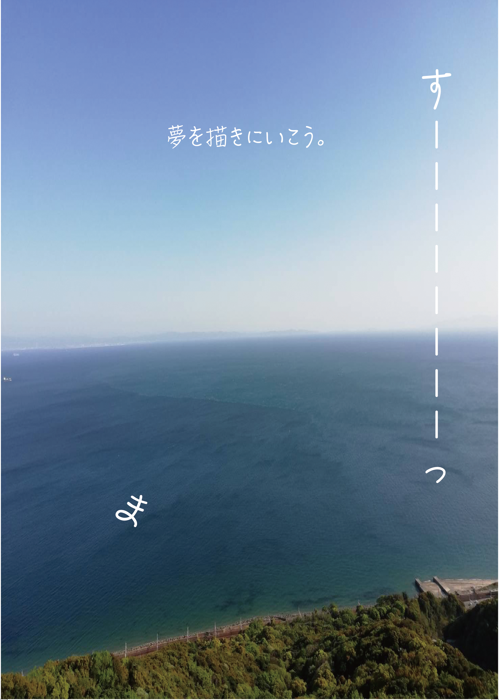

神戸市須磨区のお散歩コースの紹介パンフレット
神戸市須磨区のお散歩コースの紹介パンフレット
ターゲットは「休日に綺麗な景色を見てリフレッシュしたい人」。
海沿いの写真と柔らかい言葉で、日常から少し離れた時間の中で「夢をもう一度思い出せる」瞬間を感じられるように構成しました。
表2

表3

表2から表3にわたって写真をはみ出す形で配置して、パンフレットを開いたときにも海の広大さを感じてもらえるようにしました。
パンフレットを見るだけで駅からの距離感がイメージできるように、駅から徒歩でかかる時間を図形でわかりやすくデザインしました。
表4

視覚的にアクセスがわかるようにイラストや図を使ったデザインをしました。
仕様ツール illustrator､photoshop、mac